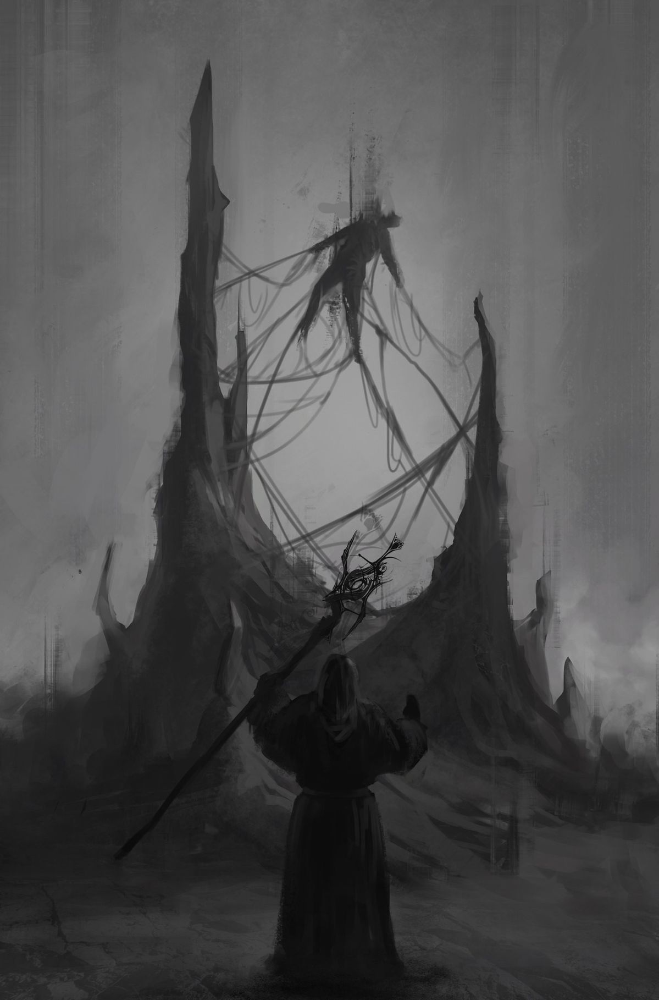

The Usurper falls. The throne room is yours. You have won — or so it seems.
Maven does not celebrate with the others. She stands apart, her eyes unreadable, the forbidden tome closed in her arms like a secret she has not yet finished keeping.
You do not act on the unease you feel. The battle is over. The people are cheering. What proof do you have? You have no proof. You have no reason to doubt her. You have no reason to doubt anyone.
But the unease does not go away. It grows. It gnaws at you. It is a weight you cannot set down, and it is a weight you cannot share.
In the weeks that follow, you find yourself watching her more than you watch anyone else. You find yourself hoping that you are wrong, that your instincts are just off, that the unease is just a shadow of the war and the fight and the loss and the exhaustion. You find yourself hoping that you can ignore it, that it will go away if you just don't look at it.
But it does not go away. It grows. It gnaws at you. It is a weight you cannot set down, and it is a weight you cannot share.
And then one day, it is not just a feeling anymore. It is a truth. It is a betrayal. It is a debt that must be paid.
You reclaimed your crown. You could not keep your life.
In secret, you are killed with magic from the forbidden tome. Maven's chance to seize the throne has come, and she takes it. The Usurper's reign is over, but the kingdom's nightmare is not.
The kingdom falls — not to the sword, but to the secret traitor you let walk free.
